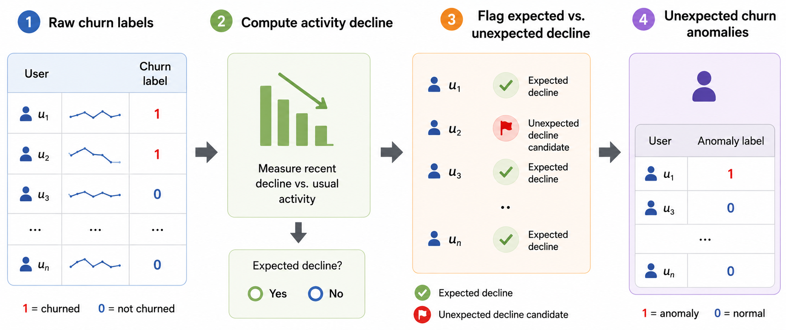
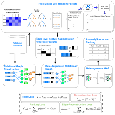
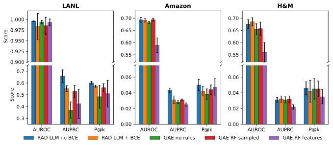

Vanderbilt University, Nashville, Tennessee, USA · noah.dahle@vanderbilt.edu
In cybersecurity, fraud, and e-commerce the data is a multi-table relational database: users, machines, products, and the events that link them. Most anomaly detectors still require one flat feature matrix, so practitioners join and aggregate the tables into row-level summaries.
Flattening discards exactly what makes many anomalies anomalous: entity identity, schema roles, multi-hop dependencies, and temporal context.
Relational deep learning preserves structure but has no anomaly objective. Symbolic behavioral rules capture analyst-style evidence but are typically bolted on after scoring. RAD puts symbolic evidence inside the learned relational representation.
Given a database 𝒟 with schema 𝒮, a target table Ttarget, its heterogeneous graph 𝒢 = (V, E, τ), and labels on a training subset Vtrain ⊂ Vtarget, learn a scoring function
evaluated by ranking held-out nodes Vtest (disjoint from training). With timestamps, s(v) may only use structure and attributes at or before tv, so no future information leaks into a score. The goal is a ranking under severe class imbalance, not a calibrated label.
| Task | Target | Tables | Records | Targets | Anomaly |
|---|---|---|---|---|---|
| LANL | Auth event | 7 | 1.65B | 1.64B | Red-team authentication |
| Amazon | Customer | 3 | 15.0M | 1.85M | Unexpected review churn |
| H&M | Customer | 3 | 16.7M | 1.37M | Unexpected purchase churn |
LANL scores authentication events in sampled relational subgraphs (users, source and destination computers, process, DNS, and flow records) with red-team labels as ground truth.
Unexpected churn (Amazon, H&M; RelBench databases) treats churn as anomalous only when it is not preceded by an expected activity decline. A churned user u is removed when its recent activity change gu ≤ −θ(μu), with a threshold that adapts to the baseline activity level μu. Default prevalence 1.5%; a sweep over 0.5%, 1.5%, and 3.0% tests sensitivity to this choice.

From the released LANL rule files. A random-forest path is a long conjunction of split thresholds; refinement keeps the behavioral core.
auth_type > 4.5 ∧ auth_type ≤ 5.5 ∧ new_src_dst_user_pair > 0.5 ∧ user_auth_count_24h ≤ 0.5 ∧ success_failure > 0.5
new_src_dst_user_pair = 1 ∧ user_auth_count_24h > 10

Rows become typed nodes, primary–foreign keys become typed edges. Type-specific input projections handle different feature spaces; construction respects the temporal constraint.
A random forest is trained on an auxiliary flattened view of the target entities. Each root-to-leaf path is a conjunctive predicate q(v) = c1 ∧ ⋯ ∧ cm. Predicates touching identifiers, labels, or future columns are dropped; the rest are ranked by support, confidence, and lift computed on training/validation data only.
Optionally, an LLM proposes SQL WHERE predicates that prune, tighten, or combine seed rules. Every proposal is re-executed and re-scored by the same support/confidence/lift filter; the LLM never sees test labels and never assigns scores. The rule set is frozen before testing.
Each retained rule is a binary feature; the rule vector r(v) ∈ {0,1}K is concatenated onto the target node: x̃v = [xv ‖ r(v)]. Non-target nodes keep their original features.
A two-layer relation-aware GraphSAGE encoder (mean aggregation, hidden size 128) yields zv; a decoder reconstructs x̃v. The anomaly score is the reconstruction error, optionally combined with an edge-reconstruction score.
| LANL | Amazon | H&M | Avg. rank ↓ | |||||||||
|---|---|---|---|---|---|---|---|---|---|---|---|---|
| Model | AUROC | AUPRC | P@k | AUROC | AUPRC | P@k | AUROC | AUPRC | P@k | AUROC | AUPRC | P@k |
| RAD (rules, no BCE) | 0.996±.001 | 0.659±.053 | 0.601±.012 | 0.693±.010 | 0.043±.003 | 0.050±.007 | 0.828±.071 | 0.143±.017 | 0.129±.022 | 2.0 | 1.2 | 2.0 |
| RAD (rules, BCE) | 0.860±.155 | 0.557±.029 | 0.572±.008 | 0.695±.010 | 0.043±.004 | 0.051±.004 | 0.787±.074 | 0.110±.020 | 0.125±.022 | 3.3 | 1.8 | 2.3 |
| RDL weighted [Fey et al.] | 0.553±.158 | 0.007±.014 | 0.021±.064 | 0.720±.002 | 0.037±.000 | 0.062±.004 | 0.700±.005 | 0.035±.001 | 0.064±.013 | 4.7 | 4.8 | 3.7 |
| RDL unweighted [Fey et al.] | 0.685±.205 | 0.015±.028 | 0.026±.078 | 0.713±.002 | 0.037±.001 | 0.062±.005 | 0.693±.019 | 0.039±.004 | 0.064±.016 | 4.3 | 3.8 | 3.3 |
| AE + Rank | 0.943±.035 | 0.525±.078 | 0.540±.065 | 0.518±.014 | 0.016±.001 | 0.015±.003 | 0.456±.024 | 0.013±.000 | 0.005±.004 | 5.2 | 5.2 | 5.7 |
| DRL [Ye et al.] | 0.673±.159 | 0.004±.002 | 0.005±.004 | 0.463±.022 | 0.013±.001 | 0.003±.000 | 0.456±.012 | 0.013±.001 | 0.009±.009 | 7.5 | 8.2 | 7.2 |
| AE | 0.888±.046 | 0.009±.003 | 0.000±.000 | 0.474±.013 | 0.014±.001 | 0.014±.009 | 0.408±.020 | 0.012±.000 | 0.007±.005 | 6.7 | 7.3 | 7.8 |
| Deep SVDD | 0.736±.073 | 0.005±.002 | 0.001±.003 | 0.458±.031 | 0.013±.001 | 0.003±.001 | 0.412±.023 | 0.012±.001 | 0.002±.003 | 7.7 | 8.7 | 8.8 |
| Isolation Forest | 0.644±.018 | 0.003±.000 | 0.000±.000 | 0.450±.002 | 0.013±.000 | 0.001±.000 | 0.402±.014 | 0.012±.000 | 0.004±.005 | 9.7 | 9.3 | 9.5 |
| Supervised MLP (full labels) | 0.965±.003 | 0.050±.011 | 0.093±.035 | 0.659±.024 | 0.027±.003 | 0.041±.009 | 0.642±.028 | 0.027±.005 | 0.039±.023 | 4.0 | 4.7 | 4.7 |
RDL = relational deep learning GNN on the same heterogeneous graph without rules. AE, Deep SVDD, Isolation Forest, DRL operate on the flattened view. P@k uses k = number of positives in the test split. Avg. rank is per metric across the three datasets (lower is better).
RQ1. RAD has the best average AUPRC rank. On LANL it dominates every baseline on AUPRC and P@k. On Amazon, supervised RDL wins AUROC and P@k while RAD wins AUPRC; on H&M, RAD wins all three metrics.
RQ5. Sweeping the unexpected-churn prevalence over 0.5%, 1.5%, and 3.0% leaves the picture intact: RAD stays competitive with or ahead of supervised RDL on AUPRC at every level, so the conclusions do not hinge on one labeling threshold.
